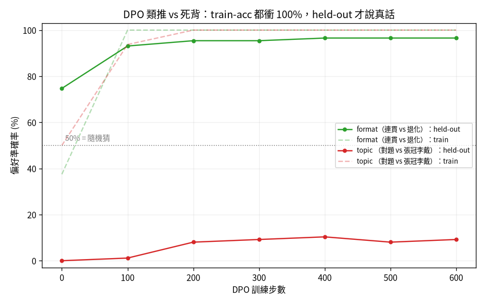
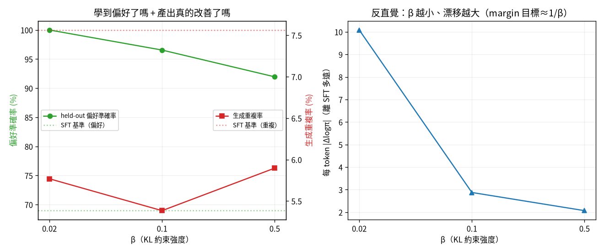
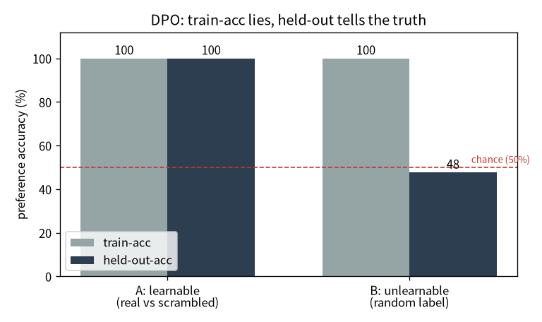
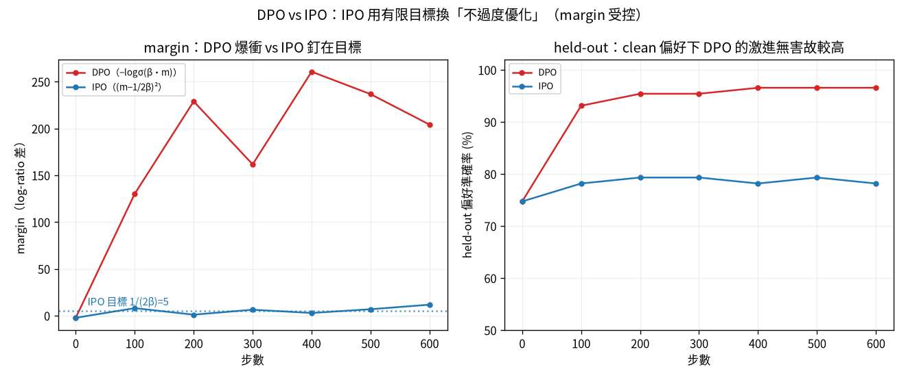
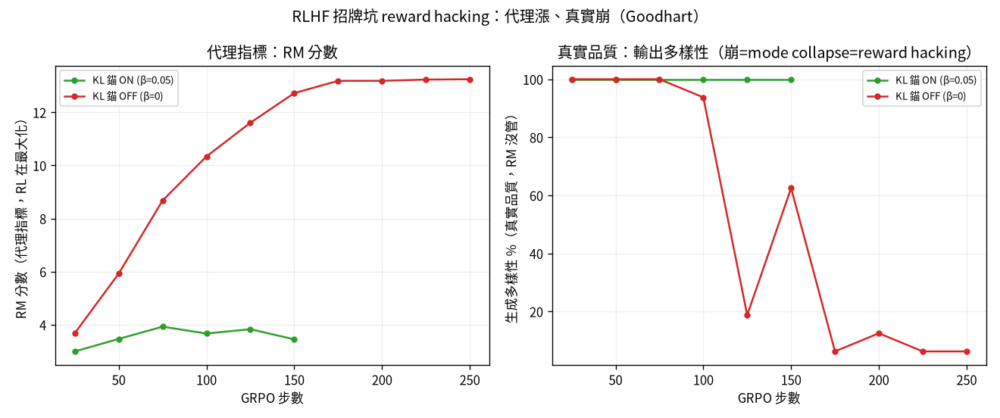
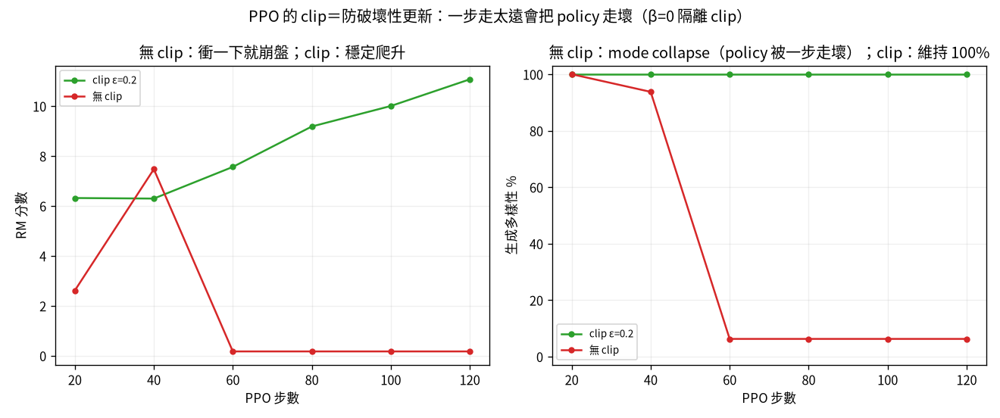

flowchart LR A["01 GPT"]-->B["02 零件"]-->C["03 效率"]-->D["04 資料"]-->E["05 評估"]-->F["06 服務"]-->G["07 治理"]-->H["08 漂移"] E -.後訓練.-> I["09 對齊"] classDef here fill:#c0392b,color:#fff,stroke:#7b241c,stroke-width:2px; class I here
9 對齊：把「接龍機器」教成「會聽話、有偏好」
一句話：預訓練只會「猜下一字」。後訓練把它對齊成助理——而每一種對齊方法，都有一個 漂亮的機制和一個會咬人的坑。
我把對齊的兩個家族都親手走過：偏好優化（DPO → IPO）和 RL 對齊（GRPO → PPO）， 每個都有對照實驗。這一章是整本書的皇冠。
注记這章的定位（讀之前先對齊期待）
假設你已經會：第 1 章的小 GPT 與「預測下一字」的訓練、第 5 章「選對指標／看 held-out」的紀律。 不需要任何 RLHF 背景。
學完你會：(1) 用一句話講清楚 SFT / DPO / IPO / GRPO / PPO 各自的漂亮機制與會咬人的坑； (2) 逐行把 DPO 損失從「序列對數機率」建起來，並說清楚 margin、β、logsigmoid 各做什麼； (3) 在你自己的 CPU 上親手重現本章最重要的一課——train-acc 衝 100%、held-out 才說真話。 本章的 💻 配套程式 tiny_dpo.py 完整內嵌、純 CPU 兩三分鐘可跑。
提示🎯 給技術主管：本章關鍵術語速查（懂的人可跳過）
不必親手實作也能跟上——每個術語一句白話 + 為什麼你該在意。
- SFT（指令微調）：教模型「會聽話、照問答格式回應」。在意它：從「接話機器」變「助理」的第一步。
- 偏好優化（DPO / IPO）：用「一好一壞」的比較教模型偏好。在意它：免 reward model 的對齊捷徑。
- reference model / KL 錨：把新模型綁在舊模型附近。在意它：防止對齊把模型帶歪（過度優化）。
- RLHF（reward model / GRPO / PPO）：用「學來的獎勵」做強化學習。在意它：ChatGPT 那套對齊的家族。
- reward hacking / Goodhart：指標一旦變成目標就被鑽。在意它：對齊最有名的坑——代理分數暴漲、真實品質崩。
- train-acc 騙你 / 看 held-out：訓練分數高 ≠ 真學會。在意它：跟第 5 章同一條鐵則。
9.1 SFT：從「會接話」到「會聽話」
第一步 SFT（指令微調）很單純：在「問：…答：…」的對話格式上續訓，模型的行為就從「續寫維基」 變成「在『答：』的位置產生回應」。
但評估它馬上踩到第 5 章那個坑的進階版：用維基 perplexity 量，SFT 看起來變爛了。真相是 尺被汙染（alignment tax + gold 答案洩漏進預訓練）。改量「應答行為率」，base 29% → SFT 72%—— 選對指標，結論才對。
9.2 DPO：免 reward model 的捷徑，與它的封閉式
DPO（直接偏好優化）給一組「同一個問題、一好一壞」的回答，用一條封閉式損失直接優化偏好， 不需要訓練 reward model、也不需要 RL。我們從一個序列的對數機率這個積木開始，一步一步 把這條損失建起來——這就是 tiny_dpo.py 裡 dpo_loss 的逐行拆解。
第 0 步——一段序列的對數機率。 模型對「下一字」給機率；把一整段回答每個位置的 log p(token｜前文) 加起來，就是「這個模型有多想生出這段話」的分數：
第 1 步——policy 相對 reference 漲了多少。 我們不看「絕對機率」，看「相對凍結的 reference（=SFT 後、還沒做偏好優化的那顆）漲了多少」。對 chosen 算一次、rejected 算一次：
第 2 步——margin：chosen 比 rejected 多漲多少。 把兩邊的「相對 reference 漲幅」相減。 margin > 0 就代表「policy 把 chosen 推得比 rejected 高」，也就是偏好排對了：
第 3 步——把 margin 推大的損失。 用 logsigmoid 把 margin 變成損失：margin 越大、損失越小。 β 是溫度，控制「推多用力 / 離 reference 多遠」（β 的反直覺行為見 小节 10.2）：
把四步拼起來就是完整的 dpo_loss——沒有 reward model、沒有 RL，就一條可微的損失：
def dpo_loss(model, ref, chosen, rejected, beta):
pol_ch, pol_rej = seq_logprob(model, chosen), seq_logprob(model, rejected)
ref_ch, ref_rej = seq_logprob(ref, chosen), seq_logprob(ref, rejected)
margin = (pol_ch - ref_ch) - (pol_rej - ref_rej)
loss = -F.logsigmoid(beta * margin).mean()
acc = (margin > 0).float().mean()
return loss, acc.item()這條式子不是憑空來的，是從 RLHF 的目標推出來的，而且推導裡有個漂亮的「配分函數相消」—— 本來 RLHF 要先學 reward、再用 RL 去最大化它，DPO 證明這兩步可以合併成上面這一條損失 （完整證明見 小节 10.1）。
9.2.1 死背 vs 真學：train-acc 會騙你
我設了兩種偏好軸——一種模型容量內、一種超出容量——然後看它們類推得如何：

警告看 held-out，不要看 train
图 9.1 裡兩條 train 線（虛線）都衝到 100%——只看 train 你會說「兩個都學會了」。但 held-out （實線）一個 97%、一個只有 9%。後者需要「標題↔︎內容」的語義綁定，8M 模型學不動、只能把訓練題 背起來。這是 MLOps 鐵則：看 held-out、別看 train。
9.2.2 精修 β：一個被資料打臉的直覺
DPO 唯一的旋鈕是 β。教科書直覺是「β 大＝KL 罰得重＝貼緊 reference」。我掃了 β，結果固定步數下 剛好相反——β 越小，policy 漂移越大（為什麼見 小节 10.2）。

9.3 💻 在你的機器上：親手看 train-acc 怎麼騙你
圖會說話，但自己跑過一次更難忘。配套程式 tiny_dpo.py 把上面那條 dpo_loss 接到第 1 章的 char-level 小 GPT 上，純 CPU、兩三分鐘，讓你親手重現 图 9.1 的那一課。
它先在莎士比亞上預訓練一顆 base 當 reference，複製一份當 policy，然後設兩種偏好軸做 DPO：
- A 軸（可學）：chosen = 真實片段、rejected = 把同一段字元順序打亂。「真的比亂的好」是個 有語義的通則 → 模型該能類推到沒看過的片段。
- B 軸（學不動）：chosen / rejected 都是真實片段，誰是 chosen 用擲硬幣亂指。這規則沒有 任何語義、無從類推 → 模型只能把訓練題背起來。
在我的 Framework 16（純 CPU）上跑出來：
偏好軸 train-acc held-out-acc
---------------------------------------------------------
A 可學（真實 vs 打亂） 100.0% 100.0%
B 學不動（隨機標籤） 100.0% 47.7%怎麼讀：兩軸的 train-acc 都是 100%——只看 train，你會宣稱「兩個都學會了」。但 held-out 說了真話：A 軸 100%（真的學到「真>亂」這個通則、能類推），B 軸掉回 47.7%≈擲硬幣（規則無從 類推，100% 只是死背訓練題）。這跟 图 9.1 的容量內 vs 容量外是同一個形狀，只是縮到你的 筆電上、兩三分鐘就親眼看到（图 9.3）。

重要這就是 MLOps 鐵則的最小可重現版
train 上漂亮的數字，可能只是背起來。 衡量「有沒有真學會」的唯一誠實方式是看 held-out。 這條鐵則在 DPO 如此、在你日後任何模型都如此——這也是為什麼第 5 章要花整章講「質疑你的尺」。
9.4 IPO：把「margin 推到無窮」改成「回歸固定目標」
DPO 的 logistic 損失飽和後梯度雖小卻永不歸零 → margin 被一路推爆 → 過度優化。IPO 改用平方損失 (m-\frac{1}{2\beta})^2，給 margin 一個有限目標，到了就停。

提示防過度優化的工具不是「無腦更好」
图 9.4 右圖：clean 偏好上 IPO held-out 78% < DPO 97%。IPO 拿準度換穩定，它的勝場在「過度優化 會傷」的場景（偏好含雜訊時 DPO 會死記）。煞車是保險，不是免費的。
9.5 RLHF 之一 — GRPO，與招牌坑 reward hacking
DPO 把 reward 隱含在 policy 裡；RLHF 把它做成一顆獨立的 reward model，再用 RL 去最大化它。 我用 GRPO（DeepSeek，不需 critic）做，並刻意演示對齊最有名的坑：

重要Goodhart：指標一旦變成目標，就不再是好指標
图 9.5：拿掉 KL 錨，policy 把 RM 分數從 3.7 衝到 13.2，輸出卻 collapse 成「不管問什麼都吐 同一串高分垃圾」（多樣性 100%→6%）。那串垃圾落在 RM 訓練分布外、被誤判高分——policy 鑽了漏洞。 這和稽核裡「KPI 被優化就造假」是同一回事。防法＝KL 錨把 policy 綁在可信舊模型附近。
9.6 RLHF 之二 — PPO，與 GRPO 簡化掉的兩塊
把 GRPO 的精簡還原回 PPO（InstructGPT 用的經典），就看得到 GRPO 丟掉了什麼：
| 零件 | PPO 有 | GRPO 怎麼省 |
|---|---|---|
| Critic（value 網路） | 學一個基準 A=R-V(x) | 用「同組 K 個回答的平均」當基準 |
| Clipped surrogate | ratio 夾在 [1\pm\epsilon]、可重用 rollout 多 epoch | 一批只訓一次，不需要 |

图 9.6（為了隔離 clip，刻意關掉 KL 罰）：無 clip 時某一步把 policy 推太遠 → 直接走崩 （多樣性 100%→6%、RM 7.5→0.2）；clip 把 importance ratio 夾住 → 穩定改進。這就是 PPO 名字裡 Proximal（近端） 的意義：逼新 policy 待在舊的附近。
9.7 帶走什麼：一條貫穿四種方法的主線
| 方法 | 漂亮的機制 | 會咬人的坑 |
|---|---|---|
| SFT | 學會應答格式 | 評估的尺被汙染 |
| DPO | 配分函數相消、免 RL | train-acc 騙你（死背 vs 真學） |
| IPO | margin 有限目標、防過度優化 | 不是無腦更好（拿準度換穩定） |
| GRPO | 不需 critic | reward model 被 hack（Goodhart） |
| PPO | clip 防破壞性更新 | 要隔離一個機制得先關掉會蓋過它的另一個 |
五個方法，五次「換把尺、結論就翻」。永遠質疑你的指標有沒有被汙染或被鑽——這比任何單一方法都重要。
9.8 練習
注记1（先預測）：把 reference 拿掉會怎樣？
DPO 的 margin 是「policy 相對 reference 的漲幅」之差。先寫下你的預測：如果把 dpo_loss 裡的 ref_ch、ref_rej 都當成 0（等於沒有 reference 錨），訓練會怎麼變？
提示參考答案
少了 reference 這個錨，損失只剩「把 chosen 的絕對對數機率推高、rejected 推低」，policy 會更不受 約束地漂移、更容易過度優化（把整個分布往訓練偏好硬拉），也更可能把無關的東西一起帶歪。 reference 項的作用正是 小节 10.2 講的 KL 錨——它把「漲幅」而非「絕對機率」當目標， 讓 policy 待在可信舊模型附近。動手把 ref_* 設 0 跑一次，對照 held-out 與生成樣本。
注记2（動手）：掃 β
警告3（弄壞）：把 B 軸的「隨機標籤」改成「可學規則」
B 軸現在用擲硬幣指定 chosen。把它改成一條有語義、模型學得動的規則（例如「chosen = 兩段中 較長的那段」），重跑。held-out 會怎麼變？
提示參考答案
held-out 會從 ~50% 爬上去——因為「比較長」是個 8M 模型也能從序列長度線索學到、且能類推的通則。 這直接證明剛才的 47.7% 不是 DPO 壞了，而是那條規則本身無從類推。同一套損失，換個學得動的 偏好軸，held-out 就說真話了——再次呼應「問題常在尺/任務、不在方法」。